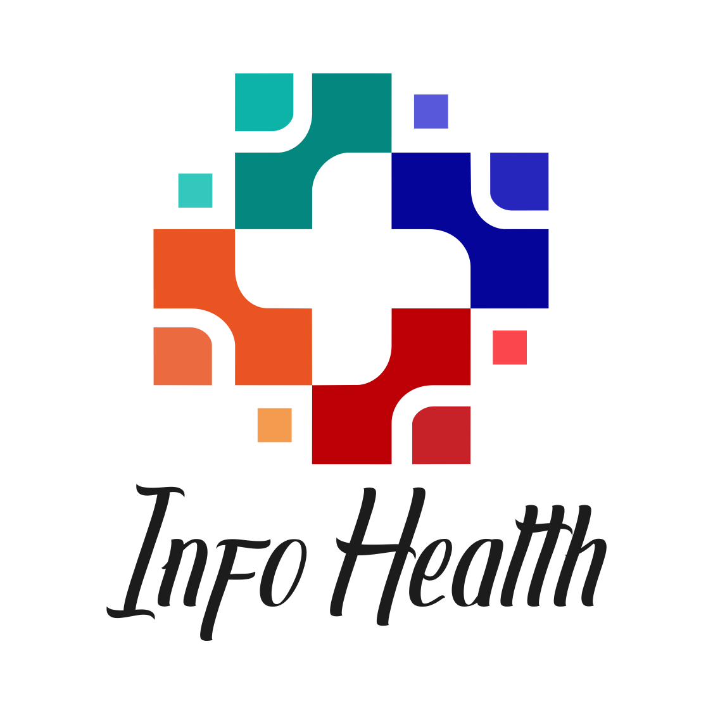
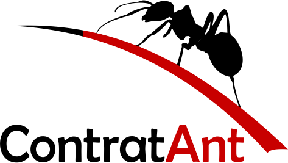

Fernanda Miranda
Início
Escolaridade
Portifólio

O Info Health é um app que tem como visão:
Para moradores das cidades de Marília, Oriente, Pompéia e Tupã do estado de São Paulo. Cujo as informações sobre o COVID-19 não tem o foco da mídia por serem cidades pequenas. O Info Health, é um aplicativo que tem como foco principal informar sobre a pandemia do COVID-19. Diferentemente do Corona SUS o nosso produto disponibiliza ao usuário informações filtradas de sua cidade, notícias do avanço do COVID-19 e unidades de atendimento.

ContratAnt
O ContrarAnt é um app que tem como visão:
PARA - Trabalhadores autônomos e Pessoas que buscam um prestador de serviço. CUJO - Encontrar e conectar profissionais qualificados com pessoas que necessitam dos seus serviço. O - ContratAnt E UM - Plataforma mobile/App QUE - Centraliza e categoriza prestadores de serviços facilitando a contratação de um serviço desejado. DIFERENTE DE - Grupos de Whatsapp e Facebook/Getninjas/Boca a boca O NOSSO PRODUTO -É um app gratuito, apresenta meios de comunicação com o prestador de serviço, categoriza os serviços.